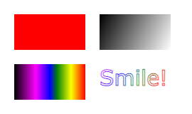

Елемент HTML canvas використовується для малювання графіки на
веб-сторінці.

Графік ліворуч створено за допомогою canvas. Він показує чотири елементи:
червоний прямокутник, градієнтний прямокутник, багатоколірний прямокутник
і багатоколірний текст.
Елемент HTML <canvas> використовується для малювання графіки на
льоту за допомогою JavaScript.
Елемент HTML <canvas> є лише контейнером для графіки. Ви повиння
використовувати JavaScript, щоб фактично намалювати графіку.
Canvas має кілька методів малювання контурів, прямокутників, кіл, тексту
ті додавання зображеннь.
Полотно - це прямокутна область на сторінці HTML. За замовчанням полотно
не має рамок і вмісту.
Розмітка вигляднає так:
<canvas id="myCanvas" width="200" height="100"></canvas>
Примітка. Завжди вказуйте id атрибут (на який потрібно посилатися в
сценарії) width i height атрибут для визначення розміру полотна. Щоб
додати межу, використовуйте style атрибут.
Ось приклад базового полотна:
<canvas id="myCanvas" width="200" height="100" style="border:1px solid
#000000;"></canvas>
Відображається так: